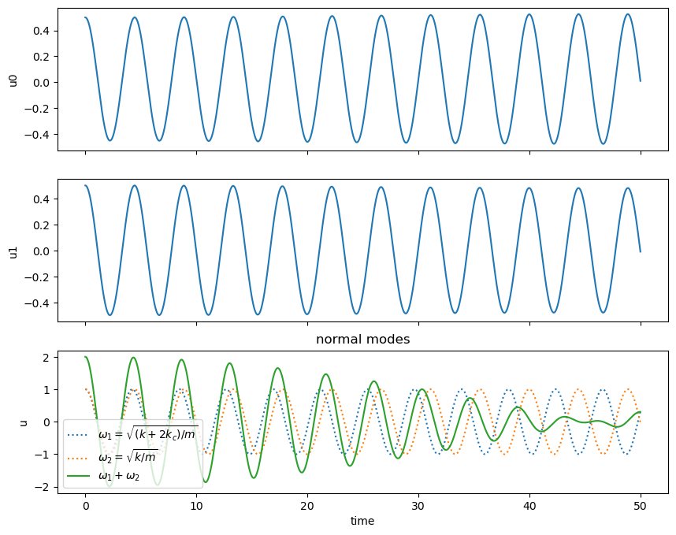
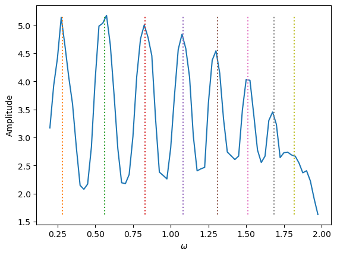

import numpy as np
import matplotlib.pyplot as plt
import matplotlib.animation as animation
class N_chain:
def __init__(self,N,m,kc,k,omega_0):
self.N = N
self.x = np.zeros(N)
self.v = np.zeros(N)
self.m = m
self.kc = kc
self.k = k
self.omega_0 = omega_0
self.xarr = []
self.varr = []
self.time = []
def F0(self,x,v,t):
return np.array([v,-self.kc*(x[1] - x[2]) - self.k*x[1] + (0.5*self.kc)*np.cos(self.omega_0*t)])
#v; -kc(u_i - u_(i+1)) - k*u_(i) + 0.5kc(cos(omega*t))
#x(t) = A*cos(omega*t (+ phase))
def FN(self,x,v,t):
return np.array([v,-self.kc*(x[1] - x[0]) - self.k*x[1]]) #v, -kc(u_i -u_(i-1)) - k(u_i)
def Fi(self,x,v,t):
return np.array([v,-self.kc*(2*x[1] - x[2] - x[0])]) #v, -kc(2u_i - u_(i+1) - u_(i-1))
def rk4_step(self,F,x,v,t):
k1 = dt*F(x,v,t)
k2 = dt*F(x + 0.5*k1[0], v + 0.5*k1[1],t)
k3 = dt*F(x + 0.5*k2[0], v + 0.5*k2[1],t)
k4 = dt*F(x + k3[0], v + k3[1],t)
x[1] = x[1] + (k1[0] + 2*k2[0] + 2*k3[0] + k4[0])/6.
v = v + (k1[1] + 2*k2[1] + 2*k3[1] + k4[1])/6.
return x[1],np.array(v)
def rk4_chain(self,tfinal,dt):
t = 0.0
while t < tfinal+dt:
xn = self.x
vn = self.v
self.time.append(t)
for i in range(len(self.x)):
self.xarr.append(self.x[i])
self.varr.append(self.v[i])
self.x[0],self.v[0] = self.rk4_step(self.F0, np.array([0,xn[0],xn[1]]),vn[0],t)
self.x[self.N-1],self.v[self.N-1] = self.rk4_step(self.FN,np.array([xn[self.N-2],xn[self.N-1],0]),vn[self.N-1],t)
if (self.N > 2):
for i in range(1,self.N-1):
self.x[i],self.v[i] = self.rk4_step(self.Fi,np.array([xn[i-1],xn[i],xn[i+1]]),vn[i],t)
t = t + dt
def animate(self,nstep): #only plots for two or three masses
lines=[]
fig, ax = plt.subplots()
for i in range(0,int(len(self.xarr)/self.N),N*nstep):
p1 = ax.plot(self.xarr[i]+1, 0., 'bo', \
self.xarr[i+1]+2, 0., 'ro', \
self.xarr[i+2]+3, 0., 'co', \
markersize=10)
lines.append(p1)
ax.set_aspect('equal')
ax.set_ylim(-0.2,0.2)
ani = animation.ArtistAnimation(fig, lines, interval=10)
plt.show()
def animate10(self,nstep): #only plots for 10 masses
lines=[]
fig, ax = plt.subplots()
for i in range(0,int(len(self.xarr)/self.N),N*nstep):
p1 = ax.plot(self.xarr[i]+1, 0., 'ro', \
self.xarr[i+1]+2, 0., 'ro', \
self.xarr[i+2]+3, 0., 'ro', \
self.xarr[i+3]+4, 0., 'ro', \
self.xarr[i+4]+5, 0., 'ro', \
self.xarr[i+5]+6, 0., 'ro', \
self.xarr[i+6]+7, 0., 'ro', \
self.xarr[i+7]+8, 0., 'ro', \
self.xarr[i+8]+9, 0., 'ro', \
self.xarr[i+9]+10, 0., 'ro', \
markersize=5)
lines.append(p1)
ax.set_aspect('equal')
ax.set_ylim(-0.2,0.2)
ani = animation.ArtistAnimation(fig, lines, interval=10)
plt.show()
def plot_2_masses(self):
omega_1 = np.sqrt((self.k + 2*self.kc)/self.m)
omega_2 = np.sqrt(self.k/self.m)
f1 = np.cos(omega_1*np.array(self.time)) #normal modes, omega_1
f2 = np.cos(omega_2*np.array(self.time)) #normal modes, omega_2
fig, axs = plt.subplots(self.N+1,figsize=(10,8))
for i in range(self.N):
axs[i].plot(self.time, self.xarr[i::self.N])
axs[i].set(xlabel='time',ylabel='u'+str(i))
axs[self.N].plot(self.time, f1, ':', label = '$\omega_1 = \sqrt{(k + 2 k_c)/m}$')
axs[self.N].plot(self.time, f2, ':', label = '$\omega_2 = \sqrt{k/m}$')
axs[self.N].plot(self.time, f1+f2, label = '$\omega_1 + \omega_2$')
axs[self.N].set(xlabel='time', ylabel='u', title = 'normal modes')
leg = axs[self.N].legend()
for ax in axs.flat:
ax.label_outer()
plt.show()
def plot_N_masses(self):
fig, axs = plt.subplots(self.N)
for i in range(self.N):
axs[i].plot(self.time, self.xarr[i::self.N])
axs[i].set(xlabel='time', ylabel='u'+str(i))
for ax in axs.flat:
ax.label_outer()
plt.show()
def plot_2_energy(self):
fig, axs = plt.subplots(self.N,figsize=(10,8))
for i in range(self.N):
KE = 0.5*self.m*np.array(self.varr[i::self.N])**2 #kinetic energy
PE = 0.5*self.k*np.array(self.xarr[i::self.N])**2 + 0.5*self.kc*(np.array(self.xarr[0::self.N])-np.array(self.xarr[1::self.N]))**2
axs[i].plot(self.time, KE, label='KE')
axs[i].plot(self.time, PE,label='PE')
axs[i].plot(self.time, (KE+PE),label = 'PE+KE')
axs[i].set(xlabel='time', ylabel='Energy'+str(i))
leg = axs[i].legend()
for ax in axs.flat:
ax.label_outer()
plt.show()Lab 8 [Solutions]: Coupled oscillators
- Goal: introduce normal modes, beats, and energy propagation.
- Consider a one-dimensional chain of \(N\) particles each of mass \(m\) with equal equilibrium separation \(a\).
- Particles are coupled by massless springs with force constant \(k_c\), except for the two end springs which have spring constant \(k\).
- Let \(u_i\) be the displacement from equilibrium of the \(i\)th mass along the axis of the system.
- The ends of the left- and right-hand springs are assumed fixed.
- Boundary conditions
\[\begin{equation*} u_0 = u_{N+1} = 0 \end{equation*}\]
- The equation of motion for the \(i\) th particle is
\[\begin{align*} m \frac{ d^2u_i}{dt^2} = -k_c(u_i - u_{i+1}) - k_c(u_i - u_{i-1}) \nonumber \\ = -k_c(2 u_i - u_{i+1} - u_{i-1}) \nonumber \end{align*}\]
- The equations for particles \(i\) = 1 and \(N\) next to the walls are given by
\[\begin{align*} m \frac{ d^2u_1}{dt^2} = -k_c(u_1 - u_{2}) - ku_1 \nonumber \\ m \frac{ d^2u_N}{dt^2} = -k_c(u_N - u_{N-1} - ku_{N}) \nonumber \end{align*}\]
- The above equations of motion describe {} oscillations, i.e., motion along the length of the system.
Exercise 1:
Study the code below and comment as necessary. The animation methods do not work in Notebook (but do from the command line).
Exercise 2: Motion of two coupled oscillators
Investigate the motion of two masses. Set the velocities of both particles equal to zero for all runs in this problem.
Choose initial conditions \(u_1(0) = 0.5\), \(u_2(0) = 0\) and compute the time-dependence of \(u_1\) and \(u_2\) for a) \(k= 1\) and \(k_c = 0.8\) and b) \(k= 1\) and \(k_c = 1\). Determine reasonable values for the time step \(\Delta t\) and the time of the run, \(tmax\). (Set the mass of the particles to unity.) Is it possible to define a period of motion in the first case? What is the period of motion in the second case?
Set \(k= 1\) and \(k_c = 0.2\). This is a case of weak coupling. Can you identify two kinds of oscillations superimposed upon each other?
Choose initial conditions \(u_1(0) = 0.5\), \(u_2(0) = 0.5\) so that both particles have equal displacements. Set \(k= 1\) and \(k_c = 0.1\). Describe the observed motion. Compute the energy (kinetic plus potential) of each particle. Does the period of motion depend on \(k_c\)? What is the dependence of motion on \(k\)?
Consider initial conditions \(u_1(0) = 0.5\), \(u_2(0) = -0.5\) so that both particles have equal but opposite displacements. Determine the dependence of \(\omega^2\) on \(k\) and \(k_c\).
Discuss your results in terms of normal modes.
#part 1
N = 2
m = 1
k = 1.0
omega_0 = 0.0*np.sqrt(k/m)
tfinal = 50
dt = 0.005
kc = 0.8
k = 1.0
co = N_chain(N,m,kc,k,omega_0)
co.x[0] = 0.5
co.rk4_chain(tfinal,dt)
co.plot_2_masses()
kc = 1.0
k = 1.0
co = N_chain(N,m,kc,k,omega_0)
co.x[0]=0.5
co.rk4_chain(tfinal,dt)
co.plot_2_masses()#part 2
kc = 0.2
k = 1.0
co = N_chain(N,m,kc,k,omega_0)
co.x[0]=0.5
co.rk4_chain(tfinal,dt)
co.plot_2_masses()#part 3
kc = 0.1
k = 1.0
co = N_chain(N,m,kc,k,omega_0)
co.x[0]=0.5
co.x[1]=0.5
co.rk4_chain(tfinal,dt)
co.plot_2_masses()
co.plot_2_energy()# part 3 (stiffer spring)
kc = 0.1
k = 2.0
co = N_chain(N,m,kc,k,omega_0)
co.x[0]=0.5
co.x[1]=0.5
co.rk4_chain(tfinal,dt)
co.plot_2_masses()
#co.plot_2_energy()
# Part 4
kc = 0.1
k = 1.0
co = N_chain(N,m,kc,k,omega_0)
co.x[0]=0.5
co.x[1]=-0.5
co.rk4_chain(tfinal,dt)
co.plot_2_masses()
kc = 0.2
k = 2.0
co = N_chain(N,m,kc,k,omega_0)
co.x[0]=0.5
co.x[1]=-0.5
co.rk4_chain(tfinal,dt)
co.plot_2_masses()Exercise 3:
Run the program with \(N= 3\), \(k_c = 0.2\), \(k = 1\) and arbitrary but non-zero initial displacements. Describe the time-dependence of the displacements of the particles.
Now consider the following three cases and discuss the results in the context of normal modes:
| \(u_0(1)\) | \(u_0(2)\) | \(u_0(3)\) | |
|---|---|---|---|
| case 1 | 0.5 | 0.5 | 0.5 |
| case 2 | 0.5 | -0.5 | 0.5 |
| case 3 | 0.5 | 0 | -0.5 |
What are the normal mode frequencies?
Add an external driving force to particle 1 and determine the normal mode frequencies. Compare with the results from part 2.
Repeat part 3, but with \(N=10\) and \(k = k_c = 1\). Try values of \(\omega\) in the range \(0.2\sqrt{k/m}\) to \(3 \sqrt{k/m}\) to find at least one resonance. Verify a few cases with the following analytical result for the normal frequencies
\[\begin{equation*} \omega_n^2 = \frac{4 k}{m} \sin^2\frac{n \pi}{2(N+1)}. \end{equation*}\]
Perturb the chain at one end (e.g., \(u_1(0) = 1\)) and determine the time it takes to for a disturbance to travel a given distance. This illustrates the propagation of energy. Estimate \(v\). Consider larger values of \(N\) to ensure that your estimate is independent of \(N\).
Now consider the following three cases and discuss the results in the context of normal modes:
| \(u_0(1)\) | \(u_0(2)\) | \(u_0(3)\) | |
|---|---|---|---|
| case 1 | 0.5 | 0.5 | 0.5 |
| case 2 | 0.5 | -0.5 | 0.5 |
| case 3 | 0.5 | 0 | -0.5 |
What are the normal mode frequencies?
#Part 1
N = 3
kc = 0.2
k = 1.0
co = N_chain(N,m,kc,k,omega_0)
co.x[0]=0.5
co.rk4_chain(tfinal,dt)
co.plot_N_masses()#Part 2, Case 1
N = 3
kc = 0.2
k = 1.0
tfinal = 11.1 #estimate time for 2 T
co = N_chain(N,m,kc,k,omega_0)
co.x[0]=0.5
co.x[1]=0.5
co.x[2]=0.5
co.rk4_chain(tfinal,dt)
co.plot_N_masses()#Part 2, Case 2
N = 3
kc = 0.2
k = 1.0
tfinal = 11.1 #estimate time for 2 T
co = N_chain(N,m,kc,k,omega_0)
co.x[0]=0.5
co.x[1]=-0.5
co.x[2]=0.5
co.rk4_chain(tfinal,dt)
co.plot_N_masses()#Part 2, Case 3
N = 3
kc = 0.2
k = 1.0
tfinal = 11.1 #estimate time for 2 T
co = N_chain(N,m,kc,k,omega_0)
co.x[0]=0.5
co.x[1]=0.0
co.x[2]=-0.5
co.rk4_chain(tfinal,dt)
co.plot_N_masses()#Part 3, add driving frequency to mass 1
N = 3
kc = 0.2
k = 1.0
m = 1.0
tfinal = 50
dt = 0.005
amp = []
omega0 = np.arange(0.2,1.5,0.05)*np.sqrt(k/m)
for i in range(len(omega0)):
co = N_chain(N,m,kc,k,omega0[i])
co.rk4_chain(tfinal,dt)
amp.append(abs(np.max(co.xarr) - np.min(co.xarr)))
plt.plot(omega0,amp)
plt.xlabel('$\omega$')
plt.ylabel('Amplitude')Text(0, 0.5, 'Amplitude')# Part 4, 10 masses
N = 10
kc = 1.0
k = 1.0
m = 1.0
tfinal = 50
dt = 0.02
amp = []
omega0 = np.arange(0.2,2.0,0.025)*np.sqrt(k/m)
n = np.linspace(1,8,8)
omegaN = np.sqrt((4*k/m)*np.sin(n*np.pi/(2*(N+1)))**2)
print(omegaN)
for i in range(len(omega0)):
#print(i)
co = N_chain(N,m,kc,k,omega0[i])
co.rk4_chain(tfinal,dt)
amp.append(abs(np.max(co.xarr) - np.min(co.xarr)))
plt.plot(omega0,amp)
for i in range(8):
plt.plot([omegaN[i],omegaN[i]],[np.min(amp),np.max(amp)],':')
plt.xlabel('$\omega$')
plt.ylabel('Amplitude')[0.28462968 0.56346511 0.83083003 1.08128163 1.30972147 1.51149915
1.68250707 1.81926399]Text(0, 0.5, 'Amplitude')
#Part 5, wave propagation
N = 10
kc = 1.0
k = 1.0
m = 1.0
tfinal = 10
dt = 0.005
omega_0 = 0.0
co = N_chain(N,m,kc,k,omega_0)
co.x[0]=0.5
co.rk4_chain(tfinal,dt)
co.plot_N_masses()